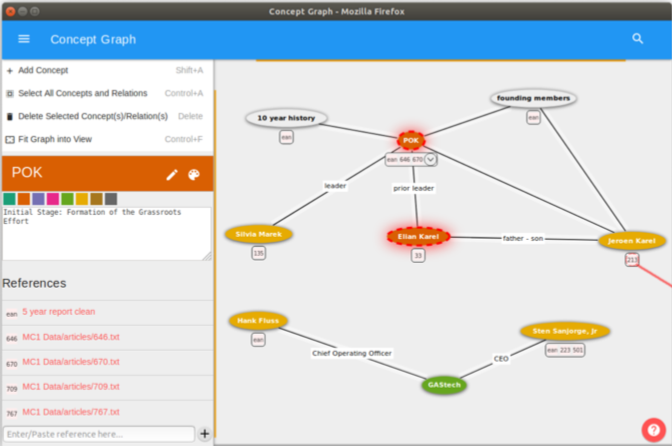

Linking Unstructured Evidence to Structured Observations


Venue. IV (2021)
Abstract. Many professionals, like journalists, writers, or consultants, need to acquire information from various sources, make sense of this unstructured evidence, structure their observations, and finally create and deliver their product, such as a report or a presentation. In formative interviews, we found that tools allowing structuring of observations are often disconnected from the corresponding evidence. Therefore, we designed a sensemaking environment with a flexible observation graph that visually ties together evidence in unstructured documents with the user’s structured knowledge. This is achieved through bi-directional deep links between highlighted document portions and nodes in the observation graph. In a controlled study, we compared users’ sensemaking strategies using either the observation graph or a simple text editor on a large display. Results show that the observation graph represents a holistic, compact representation of users’ observations, which can be linked to unstructured evidence on demand. In contrast, users taking textual notes required much more display space to spatially organize source documents containing unstructured evidence. This implies that spatial organization is a powerful strategy to structure observations even if the available space is limited.